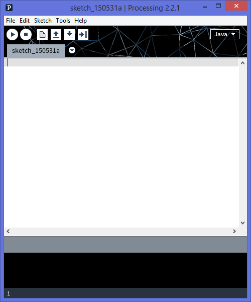
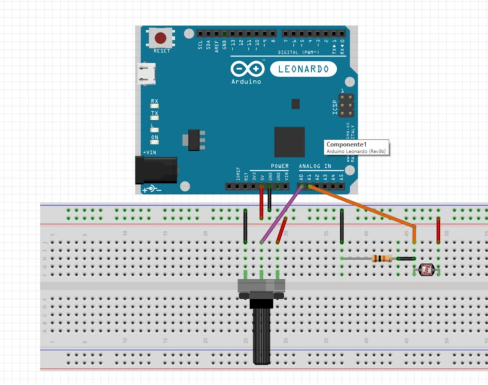
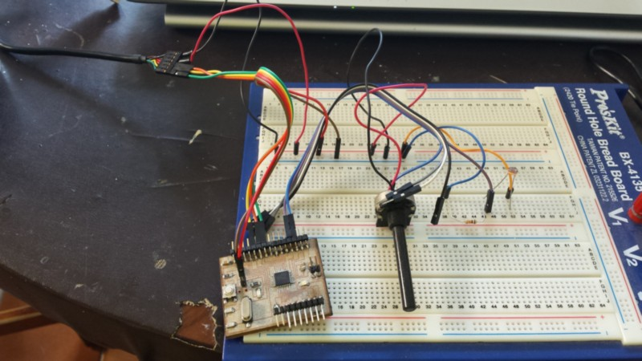
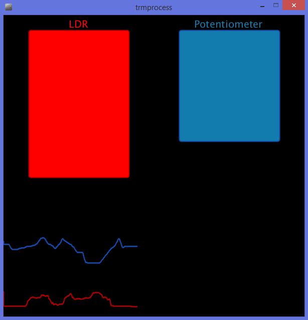

This week we have to experiment some comunication and programming lenguage whit computer and microcontroller
For this week i try to create a connection and a data visualization using a satshakit and processing
Processing is a programming language for making some graphical things using simple instruction and can interact whit the arduino like board ( or all things whit serial communication).

Fist of all I have to create a circuit and a firmware to collect some data and send it in packet to the pc via serial communication(using the atmega serial port and a ftdi cable to convert from uart to usb protocol)

i use a satshakit that will read the analog value from an LDR (light dependant resistor) and a potentiometer, convert it to digital, make a string of the data and send it trough the UART.
in the picture you can see the fritzing diagram of the connection (i use a base for explain the connection the arduino board for be quick but in the next picture you can see I use a fabbed board).

For the firmware side I use a simple arduino sketch I made, posted below.
here the code from arduino IDE
// pin assignments
int LDR = 1;
int TRM=0;
// initialize the serial port
// and declare inputs
void setup() {
pinMode(LDR, INPUT);
pinMode(TRM, INPUT);
Serial.begin(57600);
}
void loop() {
int L = analogRead(LDR);
int T = analogRead(TRM);
Serial.print(L);
Serial.print(" ");
Serial.println(T); // send the 2 data divided by a space and newline at the end
delay(100);
}
i found all the information i use to build the processing interface on the processing main site and in general on the web
I use the serial library imported at the beginning of the sketch, that implement the protocol needed to read the data from the USB ( the COM port on windows),
it will also read the first COM that will send data and assign it to the program.
here the code from Processing
import processing.serial.*;
PFont font;
Serial serial;
int x = 0;
int L= 550;
int T = 450;
int lastX = 0;
int lastL = 550;
int lastT = 450;
void setup() {
size(600, 600);
serial = new Serial(this, Serial.list()[0], 57600);
serial.bufferUntil('\n');
background(#000000);
}
void draw() {}
void serialEvent(Serial serial) {
String valueStr = serial.readStringUntil('\n'); //read serial data until new line
if(valueStr != null) { //if strig is not null value
valueStr = trim(valueStr); //trim the string from undesired char
String[] data = split(valueStr, ' '); //divide the string data
L = int(data[0]); //L = first data of the array (LDR)
T = int(data[1]); //T = second data Trimmer
//refresh the high part of the window for make the rectagle to be redraw
noStroke();
fill(#000000);
rect(0,0,600,400);
strokeWeight(2);
//LDR Data rappresentation
stroke(#AF0000); //border red
fill(#FF0000);//fill light red
textSize(20);
text("LDR",130,25);
//point(x,((L/11)+500));
rect(50, 30, 200, (L/3), 5);
line(lastX, lastL, x,L=((L/11)+500));
//trimmer data rappresentation
stroke(#134CAE); // border blue
fill(#137CAE); //fill light blue
text("Potentiometer",380,25);
//point(x,((T/11)+400));
rect(350, 30, 200, (T/3), 5);
line(lastX, lastT, x, T=((T/11)+400));
stroke(#FFFFFF);
lastT = T;
lastL = L;
lastX = x;
if(x++ >= width) {
lastX = 0;
lastL = 550;
lastT = 450;
x=0;
background(#000000); //refresh all the window to background
}
}
}
i want to make a instantaneous visualization of the data (so only the current value is displayed) and a history of the variation.
for this purpose i use the high part of the window whit two rectangle to display the current value of the readings and the lowest part of the window to make a 1 minute story board like a graphs using the line drawings.
every serial event( data revived) I clean the upper side and re-draw the rectangle, in the down side I reload the background only when I reach the end of the window.

i also used the text function for give a name at the rectangle part